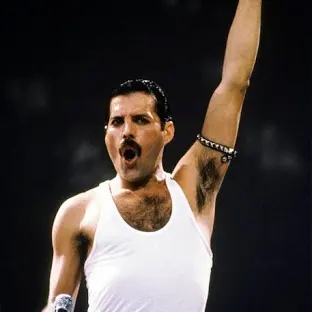

Las mejores cantantes jamas nacidos del sistema solar >:D
Encontraras cantantes de generos como rock, pop, hip hop, etc.
Top 1 Michael Jackson
Fue un cantante, compositor, productor y bailarín estadounidense.
Apodado como el "Rey del Pop", sus contribuciones y reconocimiento en la historia de la música y el baile durante más de cuatro décadas, así como su publicitada vida personal, lo convirtieron en una figura internacional en la cultura popular.
Top 2 Pablo Criticas
Pablo Criticas es un creador de contenido y youtuber conocido por su estilo humorístico y sus críticas a diversos temas, especialmente en el ámbito del entretenimiento y la cultura pop.
Ah hecho diversos covers de canciones muy famosas gracias a su voz que combina muy bien con estas.
Top 3 Freddie Mercury
Fue un cantante y compositor británico, conocido mundialmente por haber sido el vocalista principal y pianista de la banda de rock Queen.
Considerado como uno de los mejores cantantes en la historia del rock.

Top 4 Canserbero
Tirone José González Orama conocido artísticamente como Canserbero, fue un rapero, compositor y activista venezolano.
Es considerado como uno de los exponentes más significativos e influyentes en la historia del rap latino e independiente.